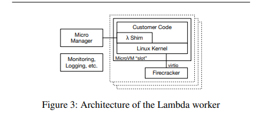

Firecracker: Lightweight Virtualization for Serverless Applications
2025-04-23
Firecracker is AWS' open source virtual machine monitor used in it's serverless functions and container offerings (Lambda and Fargate)
Firecracker is a good case study because of it's small(er) scope than many other VMMs out there. It promises fast VM startup, minimal overhead and strong security among other things.
The need for a new VMM
Serverless compute allows you to run workloads on rented computers without worrying about managing them. This is a good business to be in as cloud providers. Multi-tenancy (running multiple workloads on the same computer) is a lucrative business model but poses challenges:
- Security - one workload should not be able to access data from another
- Performance - should not decrease due to resource sharing (noisy neighbour effect)
Operating system virtualization has been explored before. The linux kernel has builtin mechanisms for this:
cgroups- grouping process and managing resource usagenamespaces- separate kernel resources like PIDsseccomp-bpf- controlling access to syscallschroot- providing an isolated filesystem
This provides strong isolation but we are trading off security (due to workloads sharing the same kernel) and code compatibility (customers should be able to run arbitrary linux binaries)
Hypervisor based virtualiztion solves for the two issues but carries with it an performance overhead.
Firecracker was built to have the best of both hypervisor virtualization and OS level containers - you get performance and isolation together
VMM
Firecracker VMM uses the KVM infrastructure built into linux kernel to provide minimal virtual machines. It relies on components built into linux rather than re-implementing their own. Eg: block I/O is passed through to the kernel, TUN/TAP is used as virtual network interfaces.
Device model
A minimal set of devices are emulated:
- serial ports
- partial PS/2 keyboard controller via i8042
- network and block devices: virtio (an open API standard) is used for exposing emulated devices. Storage only supports block devices and not filesystem as the implementation can be complex and also increases the security risks
API
Firecracker exposes REST API as a means to specify guest kernel, boot arguments, network configs, storage configs, guest machine configs and cpuid, logging, metrics, rate limiters etc.
Rate limiting and performance
The APIs can be used to describe the cores and memory required by the VMs as well as set things like cpuids. Firecracker does not emulate missing CPU functionality and cpuids are more used for hiding things from the VMs making the fleet of heterogenous computers appear homogenous
Builtin rate limiting is applied to storage (IOPS) and networking (PPS). They can also be configured via the REST APIs to change things on demand when needed. The storage / networking components are rate limited to allow for control plane operations and ensuring that a small numbers of VMs don't hijack these resources
Jailer
An important additional security measure is wrapping the firecracker VMM around a jailer process that sandboxes the VMM and:
- runs it in a chroot environment
- isolating it in pid and networking namespaces
- dropping privileges
- setting a restrictive seccomp_bpf profile - whitelisting some syscalls
In AWS Lambda
Lambda provides serverless functions which runs functions in response to events in your code. Lambda functions run within a sandbox, which provides minimal Linux userland and some libraries and utilities.

The execution of customer code happens inside the lambda worker fleet (architecture shown above). Workers provide a slot which provides pre-loaded environments for executing functions.
Each worker can run hundreds or thousands of MicroVMs (each having one slot). Along with a minimal linux userland and kernel each MicroVM contains a shim process which communicates with the outside control plane. One firecracker process is launched per MicroVM, responsible for creating and managing the MicroVM and providing device emulation and handling VM exits.
The shim process communicates with the "Micro Manager" via TCP/IP. The micro-manager is responsible for managing the firecracker process inside the worker. The manager communicates with the rest of the lambda stack to provide status updates, sending payload / error messages etc. Communication between the micro-manager and firecracker add some overhead but keeps the system loosely coupled. This communication protocol is an important boundary because it separates the multi-tenant control plane from the single tenant / single function MicroVM
The MicroVM also has processes for logging, monitoring and the like that send updates to humans and automated systems
The micro-manager also does optimizations such as pre-booting VMs to keep the lambda hot-path fast
Evaluation
Firecracker set out with a couple of goals which it achieves:
- Isolation: multiple workloads can run on the same hardware through virtualization
- Overhead and density: overhead is as low as 3% for memory and minimal for CPU
- Performance: block IO and network performance can be improved but are sufficient for Lambda and Fargate
- Compatibility: firecracker can run unmodified linux kernel and userland
- Fast switching: boot times are as low as 150ms, so switching is fast
- Soft allocation: memory and cpu are oversubscribed by multiple orders of magnitude
For some of the comparisons between Firecracker and other VMMs on metrics like boot times, overhead and IO performance check out the firecracker paper